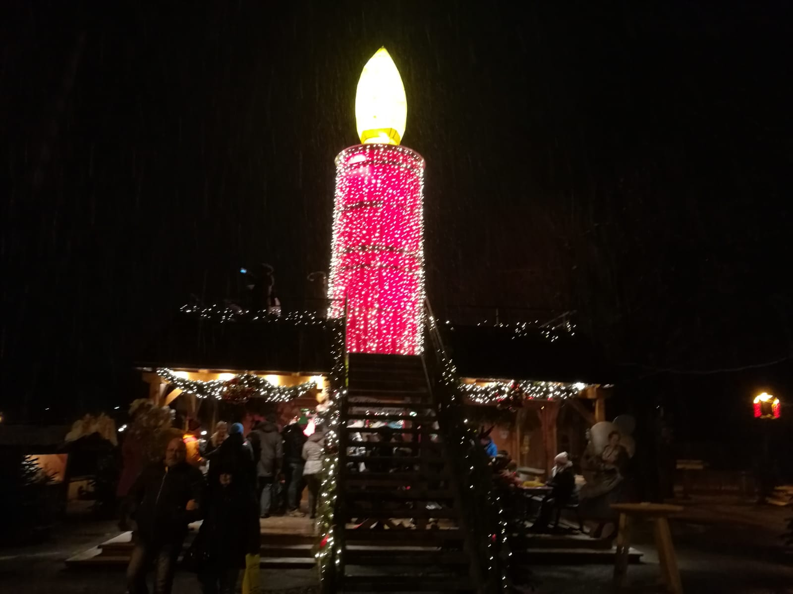
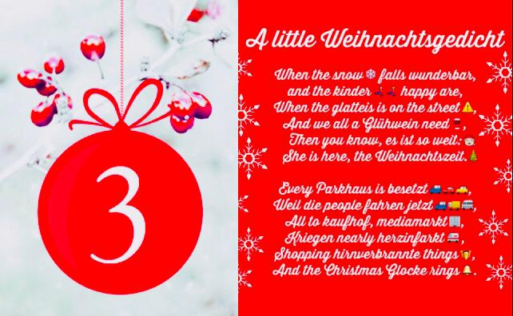
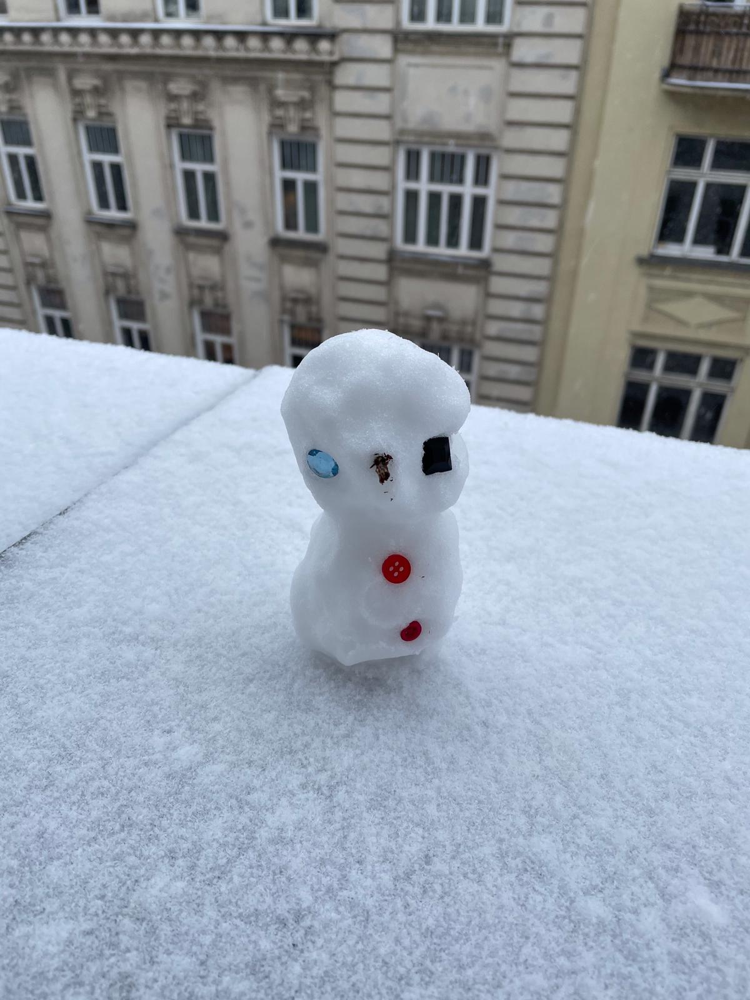
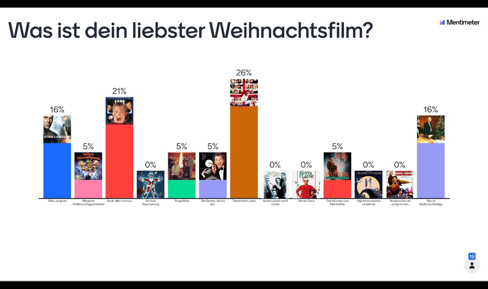
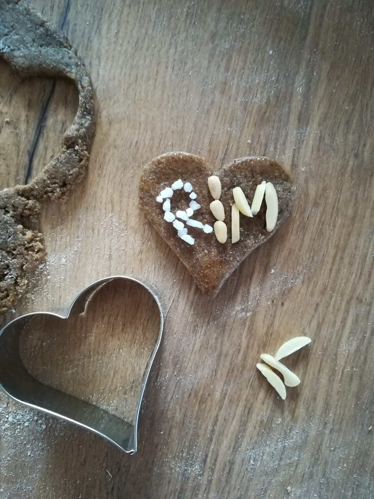
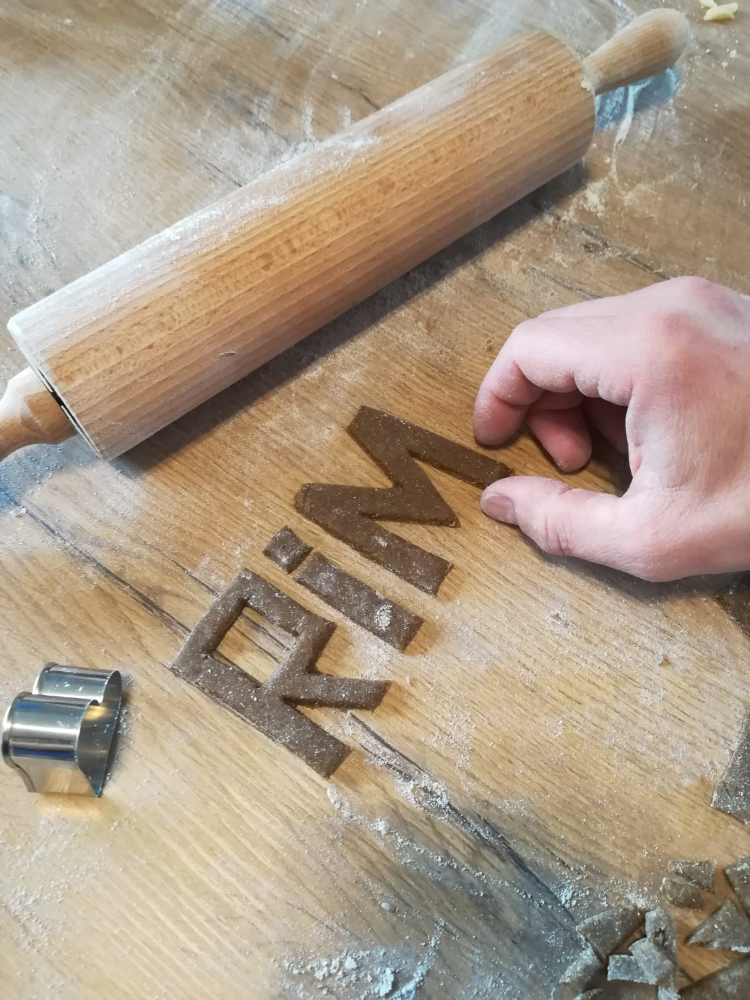
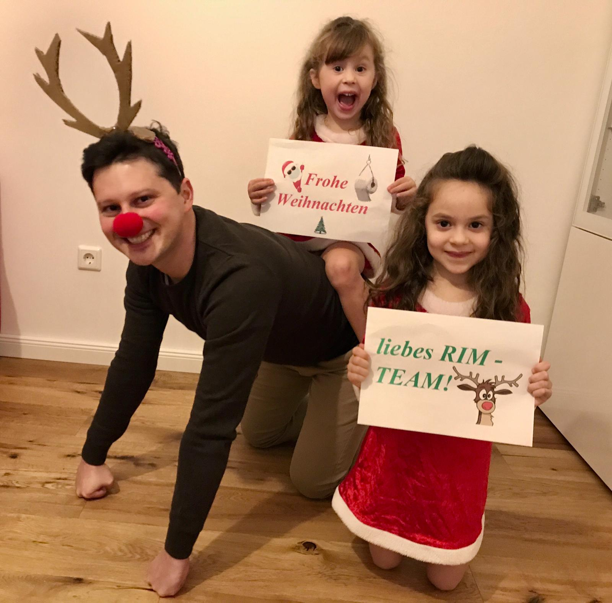
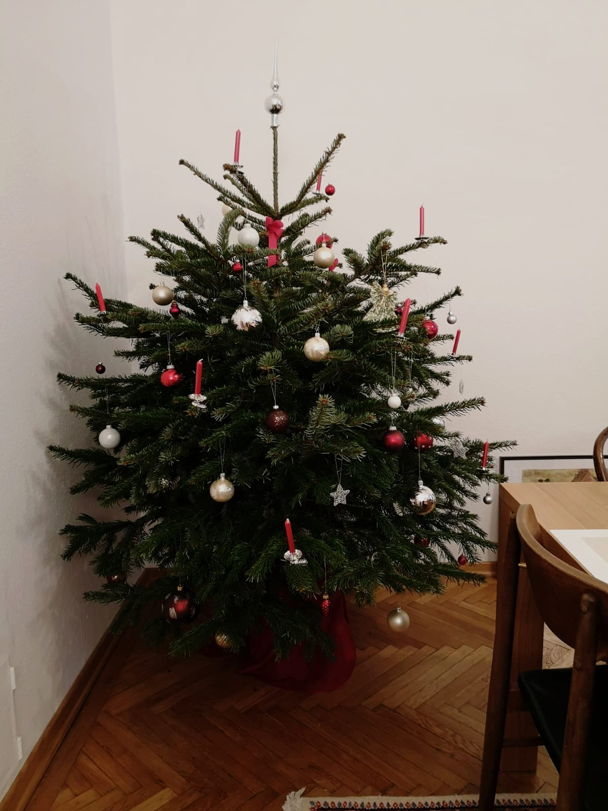

Peter hat für uns eine großartige Audionachricht aufgenommen.
Einen schönen ersen Adventtag wünscht Euch Peter. Think positiv, test negativ.
Der Winter
x
2. Dezember
-- Alex
Da leider Langenzersdorf z.Zt. grau und nicht weiß ist, musste ich auf einen Besuch in St. Gilgen am Wolfgangsees zurückgreifen 🧑🎄⛄️

x
3. Dezember
-- Anita

x
4. Dezember
-- Philipp M.
Unser erster "Schneemann" der startenden Wintersaisn... 😜

x
5. Dezember
-- Mark
Heute eine kleine Mitmach-Übung 😊
Stimmt über euren Lieblings-Weihnachtsfilm ab 📺🎅🏼
Ich hab eine kleine Liste zusammengestellt - bitte votet für euren Favoriten - ich poste am Nachmittag die Ergebnisse.
Sollte euer Lieblingsfilm fehlen, dann votet bitte für jenen Film, der euch am ehesten zusagt und postet euren Lieblingsfilm hier mit Trailer 🎬
https://www.menti.com/k18u4zvup5
And the winner is...

Tatsächlich Liebe
Kevin allein zuhaus
Stirb langsam und Mundl
x
6. Dezember
-- Theresa
Hallo, meine Lieben! 🤗 Ich wünsche euch einen schönen zweiten Adventsonn- und Nikolotag. 🎄 🎅🏻 Dir Niki auch alles Gute zum Namenstag! 😉
Heute ist der perfekte Anlass zum Teilen und Schenken. Darum lasst uns das Glück und die Freude, die wir jeden Tag gemeinsam erleben, an andere weitergeben. Auf funkelnde Kinderaugen! #SpendeKindertraum

Andi wollte auch Lebkuchen machen. Dachte er macht vielleicht Sterne oder Christbäume. Das ist dabei raus gekommen. 😆😅🙈

x
7. Dezember
-- Marian
Rudolf das Rentier und seine zwei Helferlein wünschen euch eine schöne und hoffentlich stressfreie Adventszeit!🎄

x
8. Dezember
-- Patrick
Heute kommt ein wenig Vorfreude auf Schnee und Skifahren😊🗻🎿⛷️
Keiner traut sich zuzugeben, dieser schönen weihnachtlichen Tradition treu zu bleiben, aber die Statistik zeigt die Wahrheit. Jedes Jahr um diese Zeit singt (fast 😉) jeder von uns heimlich zu Hause Last Christmas oder All I Want For Christmas Is You. ⛄️🎅💃🎶🎵🎄❄️
Heuer ist es wieder soweit!!!
Am heutigen Tag darf ich euch (oder zumindest die zahlreichen Fans von “Tatsächlich Liebe“) mit diesem Ohrwurm anstecken.
Ein großer Vorteil vom Home Office - laut singen ist zu Hause erlaubt 🎶🎵
Und beim Singen wird die Botschaft klar - das beste Geschenk ist das Gemeinsamsein.
Genießt die Zeit mit euren Liebsten und lasst uns auf ein baldiges Treffen hoffen! #soon #RIMCocktail
Ich muss sagen, ich bin ein großer Fan der Vorweihnachtszeit. ☺️🎄
Glitzernde Weihnachtsbeleuchtung 🎇, ein paar Schneeflöckchen ❄️, ruhige, gemütliche Tage daheim ☕, duftendes ungesundes Weihnachtsgebäck 🍪, chillige Weihnachtsmusik 🎶, ... Herrlich... ☺️🎄
Die Realität sieht mit meinen 3 Männern zumeist ein wenig anders und actiongeladener aus, weshalb ihr heute auch einen etwas anderen Ohrwurm von mir bekommt, und zwar den meiner tatsächlichen Vorweihnachtszeit.. 😉🎶🤘🎸
Handlungsanweisung:
eventuell Vorhänge zuziehen, wenn man Nachbarn hat
Licht dimmen
Musik voll aufdrehen
Mit Familie / Freunden (aus dem gemeinsamen Haushalt ☝️) auf der Couch springen und Luftgitarre spielen bis einem die Luft ausgeht 😉
Wünsche euch ein schönes 3. Adventswochenende und ein negatives Testergebnis! 😉🤗
x
13. Dezember
-- Philipp L.
Leider sind weiße Weihnachten in den Städten immer seltener. 🌧️
Daher hier eine kurze Erinnerung aus dem Jahre 1897, was man mit der weißen Pracht (auch als Erwachsener!) sonst noch so machen kann. Achtet besonders auf den Radlfahrer 😊
Ich wünsche euch einen schönen 3. Adventsonntag! 🕯️🕯️🕯️
Das heute Adventkalendertürchen zeigt euch einen kleinen Ausschnitt aus der heurigen Weihnachts- & Wichtel-Werkstatt im Hause Eresheim aus dem Burgenland 🤗 🎅🏼🎄❄️
x
15. Dezember
-- Rafael
Wir hatten schon ein 🪟 für die wilden und für die romantiker.
heute aber etwas für die schrägen 🦅🦜🕊 ... und ja, er singt auch andere sachen als 🐈🚽 https://youtu.be/efNhd_N7QXQ
x
16. Dezember
-- Philipp L.
Hier unser Weihnachtsbaum, der sich nach dem Aufstellen mehr breit als hoch herausgestellt hat (er steht deswegen jetzt auf einem Stockerl, damit er optisch größer scheint 😅)🎄

x
17. Dezember
-- Christian G.
Liebe Leute, das 17. Türchen 🚪 im RIM-Adventskalender hält ein besonderes Highlight für euch bereit: den derzeitigen Baufortschritt der Weihnachtskrippe der Familie Grob. Wir sind guter Dinge dass wir es bis 24. in etlichen Nachtschichten noch schaffen 😉!
Christian hat uns zwei seiner Lieblingsweihnachtslieder gesendet. Also spitzt die Ohren 🤩 Lied 1 Lied 2
x
20. Dezember
-- Thomas
Das 20ste Türchen des RIM Adventskalenders zeigt einen kleinen Blick auf unseren Weihnachtsbaum den unsere Kinder diesmal ganz ohne Hilfe geschmückt haben.
Eine wunderschöne, besinnliche und ruhige Weihnachtszeit wünsche ich Euch allen!
Liebe Grüße Thomas und Familie